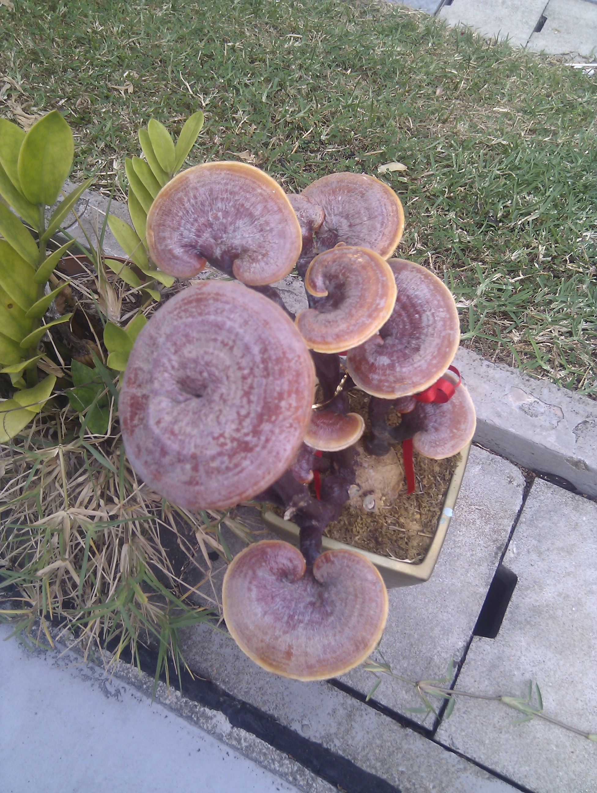

Intro to the Reishi mushroom
The Reishi mushroom (Ganoderma lucidum, also called the Lingzhi mushroom) is one of the most famous medicinal mushrooms in the world. It has been used for centuries in herbal medicine, especially in China and Japan, and is often called the "Mushroom of Immortality".
"Lingzhi, also known as reishi from its Japanese pronunciation, is the ancient 'mushroom of immortality', revered for over 2,000 years (with some evidence suggesting use in Neolithic China 6,800 years ago). However, as of 2023 there is an ongoing debate on which one of the described Ganoderma species is the true lingzhi mushroom. It is also likely that a few similar Ganoderma species were considered interchangeable." (source: Wikipedia)
Learn more about this mushroom on Wikipedia.